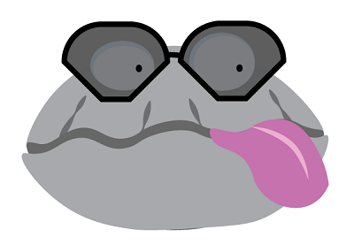
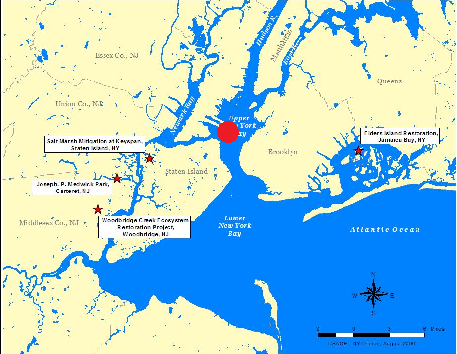

Reef Life
name

Age: 6 months

Sam's Bar Reef
Sea Feed
Current Ocean Temperature- 65 degrees Fahrenheit
Sally Shell(Sarah's Oyster) just ate Golden Plankton!
Did you know... One oyster can filter 50 gallons of water per day
Check out Spike's (Buffy's Oyster) New Shades!
Nitrogen levels in the reef- 42%
Did you know...The Billion Oyster Project has restored 1.05 acres of oyster reef area
Sam's Bar is having a special on shellfish today!
Johnny Oyster(Your Oyster) just grew!